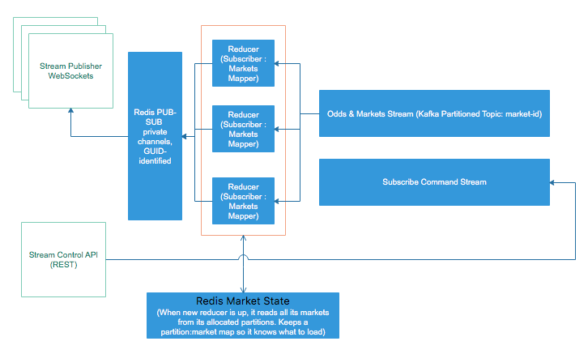

Streaming Architecture Using Apache Kafka And Redis
This post describes an architecture based on Apache Kafka and Redis that can be applied to building high performing, resilient streaming systems. It applies to near-realtime systems, where a stream of events needs to be processed and the results submitted to a large list of subscribers, each of them receiving its own view of the stream.
Examples might include the following:
- Streaming bookmaker odds - different users are browsing different parts of the site and have different markets added to their bet slips
- Realtime games - based on player input and game rules, for each player a different world view is computed
- Subscription-based data distribution, each consumer receiving a partition of the total data set
The architecture assumes large data volumes, potentially with a computationally intensive step required to compute the individual view. The architecture assumes the reducers, the components responsible for computation, can scale independently and recover from failures by restarts. Their stateless nature and dynamic scaling makes them very suitable for a deploying in a Kubernetes cluster.

The picture above uses the terminology of a streaming system for distributing bookmaker odds to all connected web and mobile clients.
Overall, the system is composed of several parts working together and scaling independently:
- A stream control API: can be implemented as a normal REST service, load balanced.
- A stream publisher: it accepts WebSockets connections, load balanced, individual connections can land on any machine.
- A Redis PUB-SUB component where channels reside. This can, eventually, be sharded or replaced with a RabbitMQ cluster. The stream publisher and the Redis PUB-SUB can be replaced with
socket.io. It uses the same principle underneath. - A Kafka queue with two topics: one for stream commands, which are distributed to all reducers, and a partitioned topic, from which all reducers consume their individual partitions without overlap (let's call it the data topic). This topic receives the largest amount of data. For good load balancing, it is recommended that it has a high number of partitions.
- The reducers themselves, consuming non-overlapping partitions from the data topic.
- A state store, can be either a HA Redis cluster, MongoDB or any very fast key-value sture.
Apache Kafka
Apache Kafka allows to store the incoming data stream and computation results used for later stages in the pipeline in a fault tolerant, distributed way. Apache Kafka also allows brining new servers to the system in case of high data load.
- In case of replication, each partition will have one server as the leader and configurable other as followers. Leader is managing read / write requests for a specific partition, while followers are managing replication of the leader.
- In Kafka, leadership is defined per partition. That means that a server can be leader for a partition but a follower on another.
- Zookeeper stores consumer offsets per topics.
A simple way to use start with Kafka for fun projects at home is to use a docker-compose with a setup similar to the following:
version : '3.5'
services:
zookeeper:
image: "confluentinc/cp-zookeeper"
environment:
- ZOOKEEPER_CLIENT_PORT=2181
kafka:
image: "confluentinc/cp-kafka"
environment:
- KAFKA_ZOOKEEPER_CONNECT=zookeeper:2181
- KAFKA_ADVERTISED_LISTENERS=PLAINTEXT://kafka:9092
- KAFKA_OFFSETS_TOPIC_REPLICATION_FACTOR=1
kafka_rest:
image: "confluentinc/cp-kafka-rest"
ports:
- "8082:8082"
environment:
- KAFKA_REST_ZOOKEEPER_CONNECT=zookeeper:2181
- KAFKA_REST_LISTENERS=http://0.0.0.0:8082
- KAFKA_REST_HOST_NAME=kafka_rest
networks:
default:
name: oda
Please note that a race condition in the dockerfile above (Zookeeper starts slower than Kafka) leads Kafka service to fail to start and it must me restarted with docker-compose scale kafka=1. Once the service is up, we can test the configuration as follows:
docker run --net=oda --rm confluentinc/cp-kafka bash -c "seq 42 | kafka-console-producer --request-required-acks 1 --broker-list kafka:9092 --topic foo && echo 'Produced 42 messages.'"
docker run --net=oda --rm confluentinc/cp-kafka kafka-console-consumer --bootstrap-server kafka:9092 --topic foo --from-beginning --max-messages 42
Below, a short node script to simplify playing with kafka console tools by providing default parameters to work with the dockerfile presented above:
#!/usr/local/bin/node
let child_process = require('child_process');
let cmds = {
'topics' : ['kafka-topics', '--zookeeper', 'zookeeper:2181'],
'produce' : ['kafka-console-producer', '--broker-list', 'kafka:9092'],
'consume' : ['kafka-console-consumer', '--bootstrap-server', 'kafka:9092']
}
let params = null;
process.argv.forEach((arg) => {
// first with command
if (params == null && cmds[arg] != null) {
let cmd = cmds[arg];
params = ['run', '--net=oda', '--rm', '-it', 'confluentinc/cp-kafka', ...cmd]
}
// add the rest
if (params != null){
params.push(arg);
}
});
let docker = child_process.spawn('docker', params, {stdio: 'inherit'});
docker.on('error', (err) => {
console.log('Failed to start docker');
});
docker.on('close', (code) => {
console.log(`Child process exited with code ${code}`);
});
This allows easy testing as follows:
- To create a topic named
test:./kafka.js topics --create --topic test --replication-factor 3 --partitions 3 - To list the topics:
./kafka.js topics --list - To produce some messages:
./kafka.js produce --topic test - To read the messages from the beginning:
./kafka.js consume --topic test --from-beginning
Zookeeper can and should be scaled also. Due the quorum required, the formula for determining the number of Zookeeper instances to run is 2 * F + 1 where F is the desired fault tolerance factor.
To test that indeed data is moving through the system, let's write the code for the Kafka Producer. I will use a very basic NodeJS package which connects to Kafka's REST API. For production use, the more advanced packages like kafka-node and the fast growing at the moment of writing this kafkajs should be preferred. I use here the kafka-rest package for simplicity and convenience.
```javascript
const KafkaRest = require('kafka-rest');
// kafka rest is exposed from docker-compose on 8082
const kafka = new KafkaRest({ 'url': 'http://localhost:8082' });
// make sure the topic is created before
const target = kafka.topic('random_walk');
const randWalker = function(){
function clamp(v, min, max){
if (v < min) return min;
if (v > max) return max;
return v;
}
let dir = 0;
let prevStep = 0;
const rnd = require('random');
return {
randomWalk(){
dir = clamp(rnd.normal(dir, 1)(), -0.75, 0.75);
prevStep += dir;
return prevStep;
}
}
}();
setInterval(()=> {
// very basic producer, no key, no partitions, just straight round robin
target.produce( randWalker.randomWalk().toFixed(4) );
}, 1000);
A simple consumer can be implemented as follows:
```javascript
const KafkaRest = require('kafka-rest');
const kafka = new KafkaRest({ 'url': 'http://localhost:8082' });
// start reading from the beginning
let consumerConfig = {
'auto.offset.reset' : 'smallest'
};
// join a consumer group on the matches topic
kafka.consumer("consumer-group").join(consumerConfig, function(err, instance) {
if (err)
return console.log("Failed to create instance in consumer group: " + err);
console.log("Consumer instance initialized: " + instance.toString());
const stream = instance.subscribe("random_walk");
stream.on('data', function(msgs) {
for(var i = 0; i < msgs.length; i++) {
let key = msgs[i].key.toString('utf8');
let value = msgs[i].value.toString('utf8');
console.log(`${key} : ${value}`);
}
});
});
Consumer Groups
Consumer Groups provide the core abstraction on which the proposed architecture is built. Consumer Groups allow a set of concurrent processes to consume messages from a Kafka topic while, at the same time, guaranteeing that no two consumers will be allocated the same list of partitions. This allows seamless scaling up and down of the consumer group as the result of fluctuating traffic, as well as due to restarts caused by consumer crashes. Consumers from a consumer group receive a rebalance notification callback with a list of partitions that are allocated to them, and they can resume consuming either from the beginning of the partition, from the last committed offset by another member of the group or from a self-managed offset.
The code above allows a very easy way to check how consumer groups work. Just start several competing consumers and kill one of them or restart it later. Since restart policy is set to the beginning of the topic, 'auto.offset.reset' : 'smallest' consuming will start every time from the beginning of each partition.
Note on Redis
The architecture can achieve its highest throughput only by using Redis pipelines to batch updates to Redis as much as possible.
For additional scenarios, Kafka offsets might be committed only after the Redis is updated, trading throughput for correctness.
Main Command and Data Flows
In this section we will take the odds update scenario (sportsbook), in which the updates need to be pushed to the listening front-ends as fast as possible.
The simple scenario: the user wants to subscribe to changes to a single market
- Subscriber issues a "subscribe" command to the REST control API and he is issued a unique channel ID (for example, a GUID)
- The subscribe command is issued further to all the reducers through a fan-out mechanism (command topic).
- The subscriber opens a websocket to the Stream Publisher and requests that its connection is mapped to the channel id. The Stream Publisher subscribes to the Redis PUB-SUB channel with that specific connection-id. So far no data has been published to the Redis PUB-SUB.
- Once the subscribed receives ACK that the connection has been established, it issues another command, "begin stream" to the command API. This is done to instruct the reducers to compute the initial state and send it through the pub-sub after the subscriber has opened the connection, so no updates are lost.
- Reducers maintain two maps: market ids to chanel id and channel ids to markets, so that for each incoming market it is directed to its subscribing channels and the disconnects are managed properly without leaving memory leaks behind.
Reducers might maintain a copy of the market values updated in memory for fast access and in-process cache, but for each subscribed market, its value must also be saved in an out-of-process Redis HA cluster or sharded MongoDB. On subscription, if the market is not already in the memory of the reducer, that is no other subscriber has subscribed to it yet, it must be looked up first in the shared Redis or Mongo. On new incoming market updates from the Kafka topic, Redis / Mongo must be updated first. If updates cannot be skipped, the offsets are committed only after the Redis / Mongo write succeeds. Subscriptions are also saved in Redis / Mongo to account reducer restarts, scaling up or down.
To handle reducer restarts, partitioning logic is made known to the reducer, so upon reading the subscription information it knows which class of market ids it will serve and which to ignore. If the ACK to Kafka is sent after the message has been published to the subscribing clients, the reducer might opt for lazy initialization and not read the current state from Redis for its assigned markets. If the rate of subscription is very high, the reducer might opt to store in a separate collection in Redis a list of popular markets to eager read upon initialization, but, in my opinion, this is more an optimization than a functionality that must be implemented from the start.
Variations
-
Subscribers are able to subscribe to yet unknown markets - e.g. all football matches about to start. In this approach, the reducer is cascaded in two steps: one to compute market IDs which match the query and act as a virtual subscriber on behalf of the client, and a second step, the one described above, where markets are sent to subscribing clients.
-
Views for complex queries (e.g. upcoming matches page) are published through REST and then through a CDN for a quick initial load, together with a timestamp. The subscriber thus a) knows which markets to subscribe to as they are already in the page and, b), can use the timestamp to start receiving only the updates newer than what it already has. This approach reduces greatly the time to first load.
-
The reducer is not publishing markets, but changes to a game state, driven by user actions and match events. In this case, the command queue becomes the queue for match events which are distributed to all reducers, the odds queue becomes the receiver for user actions, but the general pattern remains the same.
Alternative Approach
An alternative approach that can be used for prototyping and a relatively solid MVP is to use something like MongoDB Streams (or Firebase, or RethinkDB) to listen to changes to a collection where the states are stored and modified in place. Each document is the atomic unit of change. A customer can subscribe to one to many documents. All changes are propagated to all publishers and the publisher decides which are the correct recipients.
This take on the architecture allows a simpler model where the developers are freed from managing complex problems, like persistence, synchronization and restores, while reducing the number of dependencies and simplifying operations.